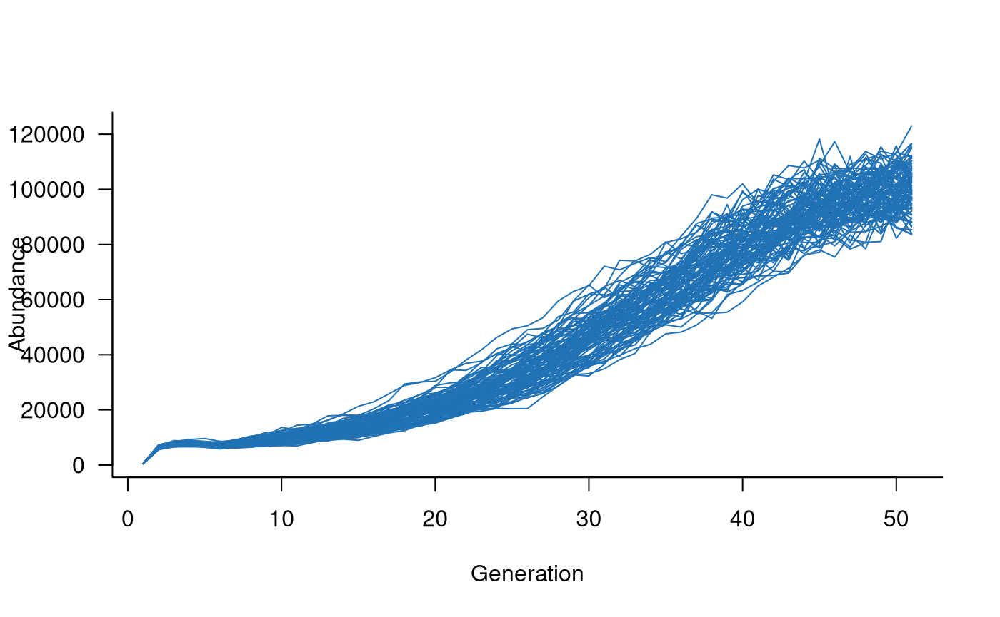
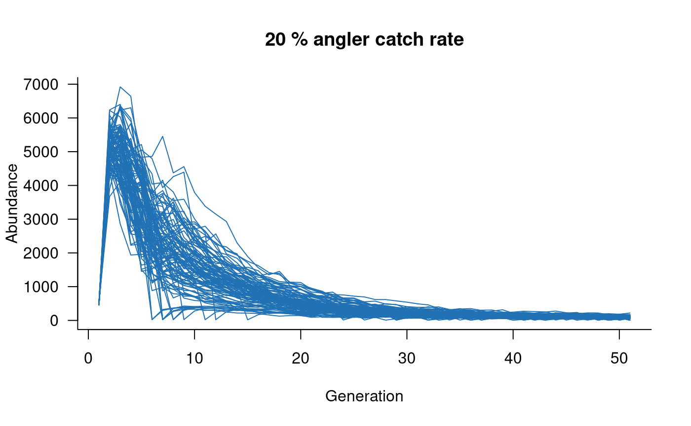
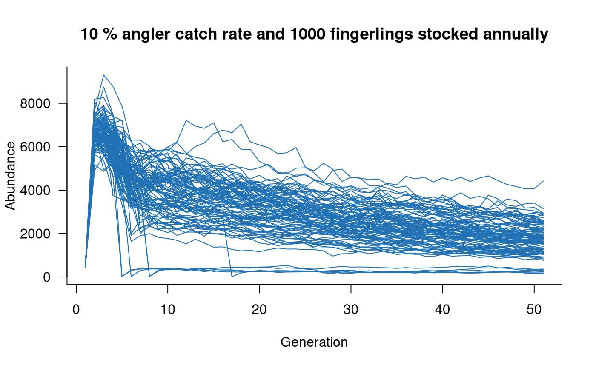

Population model templates with aae.pop.templates
Jian Yen
01/07/2021
Source:vignettes/templates.Rmd
templates.RmdBackground
A major benefit of aae.pop is that a single population
dynamics object can be used in multiple applications, each with
different parameters, model settings, or processes. To support this, the
aae.pop.templates package has been developed to collate
pre-defined population models for several species. The
aae.pop.templates package is separated from the
aae.pop package because it is limited in its current
applications and is updated much more regularly than
aae.pop. This package is not required to use
aae.pop and is described here primarily to illustrate how
templates can support applications where a single model structure is
used frequently. Current templates focus primarily on models of
freshwater fish species. All models were developed by researchers at the
Arthur Rylah Institute for Environmental Research.
This document lists several templates included in the
aae.pop.templates package, outlines the structure of a
basic template, and demonstrates how to use a template.
Installing aae.pop.templates
You can install the aae.pop.templates package from
GitHub. To install from GitHub, you’ll need the remotes R
package, which you can install from CRAN with:
install.packages("remotes")You can then install the aae.pop.templates package from
Github with:
remotes::install_github("aae-stats/aae.pop.templates")Once completed, you should be able to load the
aae.pop.templates package with
library(aae.pop.templates).
What is a template?
The purpose of a template is to capture the population dynamics object for a species, along with additional arguments or functions required to simulate population dynamics. This is slightly more involved than simply defining the population matrix and some default processes. Rather, a template should be flexible enough to encompass multiple scenarios or contexts and should be supported by a clear rationale for model structure and parameters. In many cases, this will involve references to published works detailing a model’s development and implementation.
Templates have been developed for several freshwater fish species, including Murray cod (Maccullochella peelii), Macquarie perch (Macquaria australasica), estuary perch (Percalates colonorum), Yarra pygmy perch (Nannoperca obscura), barred galaxias (Galaxias fuscus), and Australian bass (Percalates novemaculeata). An additional template has been developed for platypus (Ornithorhynchus anatinus).
Template structure
Templates have their own object class. This class is handled slightly
differently to standard dynamics objects in
aae.pop. This structure is required because templates
comprise a dynamics object as well as a set of arguments
that specify how a simulation should be conducted. Templates capture
quite complex models, so it is common that the simulation process for
these models depends on non-standard parameters or functions.
In aae.pop.templates, templates are defined by a
function following the standard naming structure
template_SPECIES, where SPECIES is the name of
the relevant species. This function can take any arguments and needs to
return a named list with an element named dynamics
containing the components of a dynamics object (not a
compiled dynamics object) and optionally an element named
arguments containing a compiled set of arguments to be
passed to simulate via the args argument.
Arguments are compiled with the get_args function, which
calls a function with the naming structure args_SPECIES,
where SPECIES is the name of the relevant species. An
args_SPECIES function can take any arguments and needs to
return a named list as would be passed to args in
simulate (e.g., arguments specifying the form of
density_dependence or covariates). Finally,
templates in aae.pop.templates are wrapped in a single
function that calls get_template, which compiles the
population dynamics object and returns a
template object.
Although relatively complex, a straightforward way to develop a
template is to copy an existing template and update specific details as
required. Including a custom template in aae.pop.templates
requires several more steps because both get_template and
get_args check that a template exists for a given species
with the aae.pop.templates:::check_species_template and
aae.pop.templates:::check_species_args functions. The
general steps outlined above would work similarly for a custom template
not included in aae.pop.templates but would require custom
functions to compile arguments and dynamics objects because
get_args and get_template will throw an
error.
Using templates
Once defined, templates are straightforward to use. Here is an example simulating Murray cod dynamics for 50 years:

Note that, with three lines of code, this template now simulates 100
replicate trajectories for a species with 50 age classes and complex
forms of density dependence and environmental and demographic
stochasticity. Importantly, this template also incorporates
river-specific effects of covariates, stocking and angling effects, and
variable carrying capacities. Changing these requires either a few
arguments to the template definition or, in the case of covariates,
requires covariates provided as args to
simulate.
# change carrying capacity (applies to adults, total plotted
# abundances will exceed this value)
mc <- murray_cod(k = 1000)
sims <- simulate(mc, nsim = 100)
plot(sims, col = "#2171B5", main = "K = 1000")
# add angling effects
mc <- murray_cod(k = 10000, p_capture = 0.2)
sims <- simulate(mc, nsim = 100)
plot(sims, col = "#2171B5", main = "20 % angler catch rate")
# add angling effects
mc <- murray_cod(k = 10000, p_capture = 0.1, slot = c(500, 800))
sims <- simulate(mc, nsim = 100)
plot(sims, col = "#2171B5", main = "10 % angler catch rate but relaxed restrictions")
# add angling effects
mc <- murray_cod(k = 10000, p_capture = 0.1, n = c(1000, 0, 0))
sims <- simulate(mc, nsim = 100)
plot(sims, col = "#2171B5", main = "10 % angler catch rate and 1000 fingerlings stocked annually")
Arguments to murray_cod are described in the associated
help file (?murray_cod), as are those for all other species
templates. Covariates are not currently described in these documents but
some features to interrogate and specify covariates are in
development.